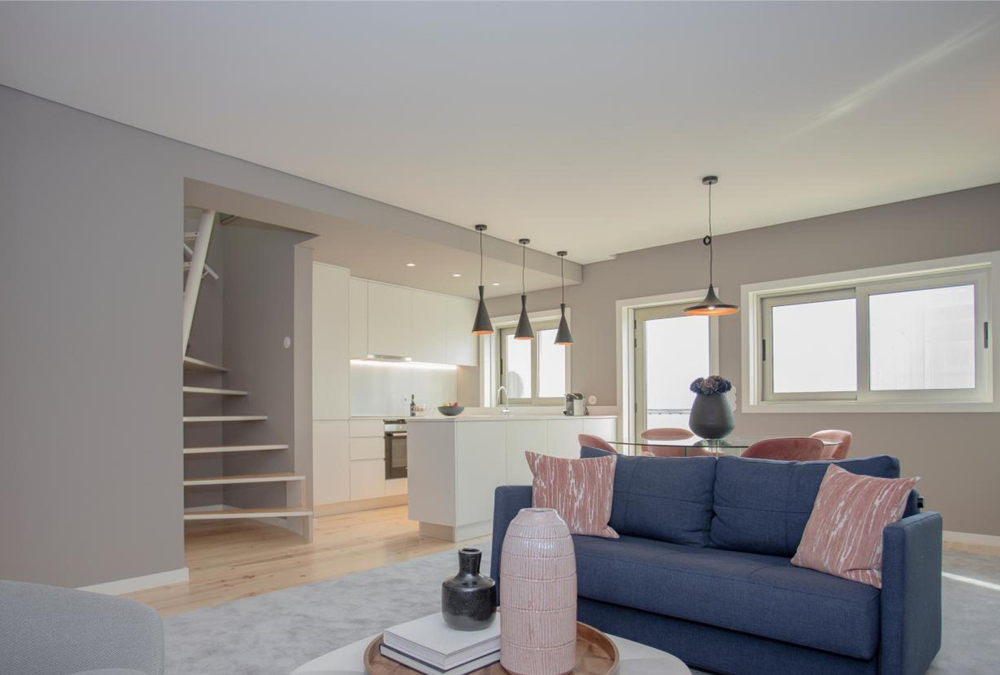
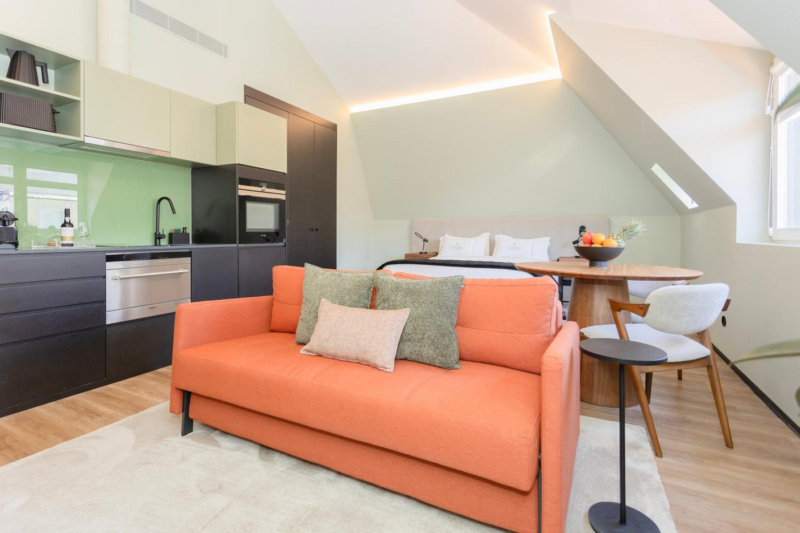
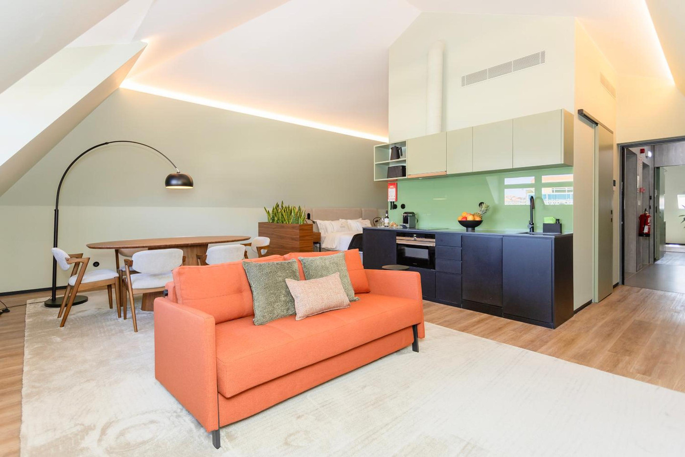
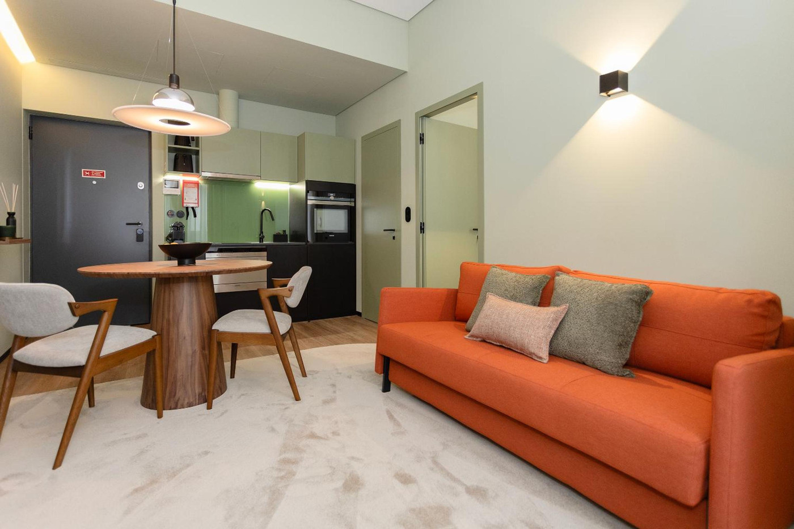
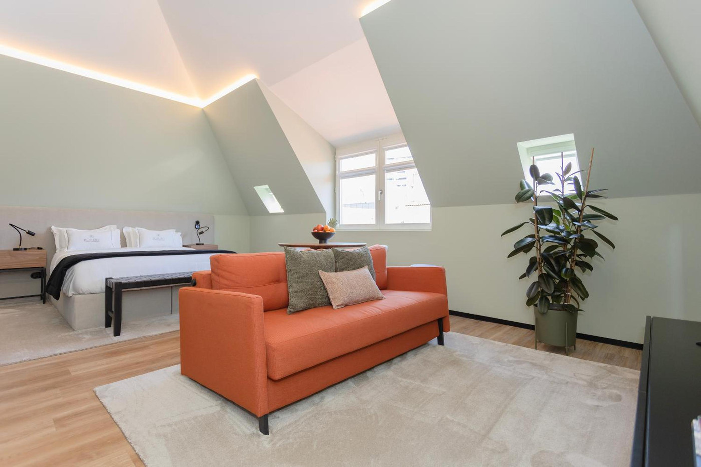
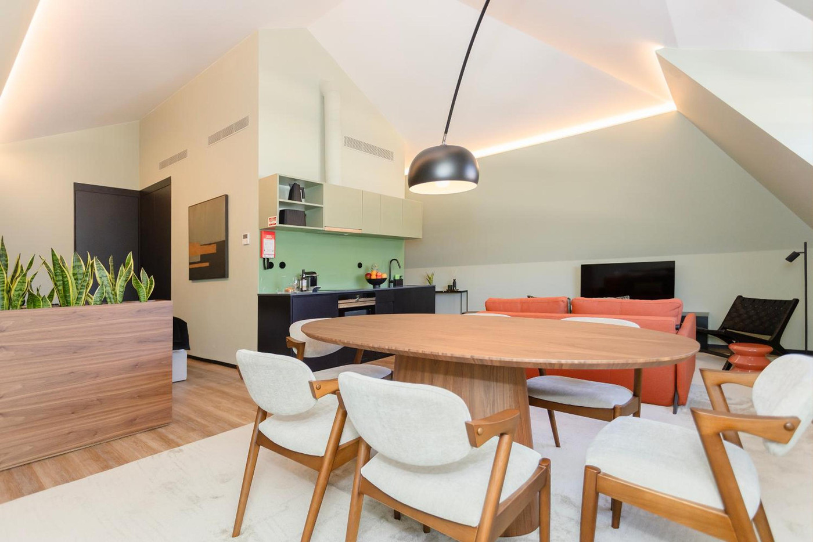
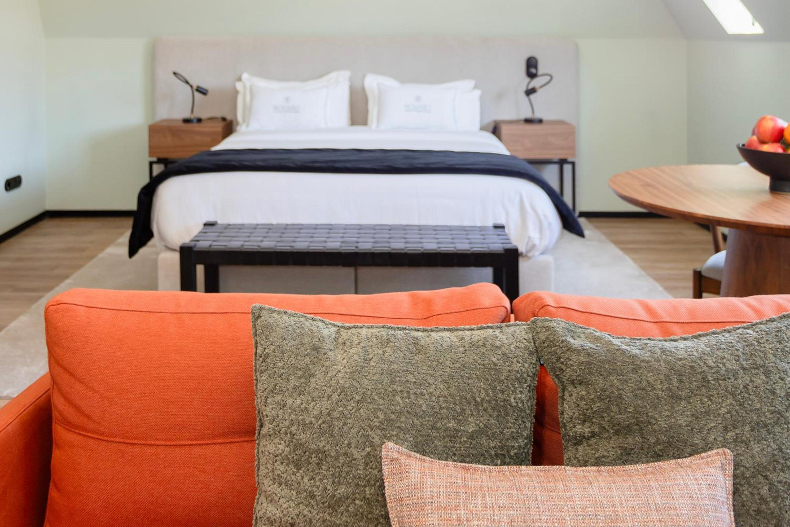
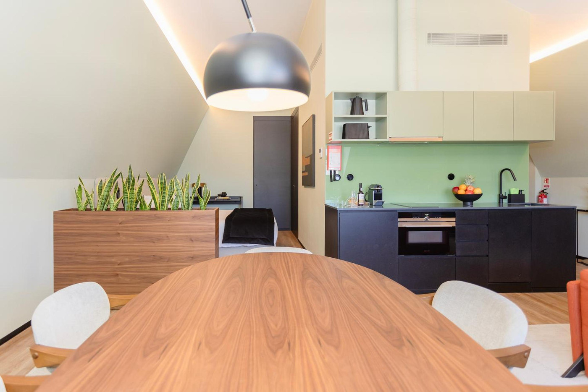

Início Os apartamentos
Os apartamentos.
Do T1 em frente ao mercado à penthouse com terraço no último andar. Três já têm página; os outros estão a ser preparados.
-

A01
Alegria Penthouse
Duplex T2 · 125 m² · terraço
Ver a casa -
 A
A02
Alegria Standard
Apartamento T2 · 95 m² · 2 casas de banho
Ver a casa -
 B
B03
Bolhão T1
Apartamento T1 · 45 m² · até 4 pessoas
Ver a casa -
Primrose 1.5Em construçãoA 04
Primrose 1.5
Rua da Alegria, 215 · RNAL 106230
-

Em construçãoB05
Bolhão 1F
Rua de Alexandre Braga, 26 · RNAL 162281
-

Em construçãoB06
Bolhão 1T
Rua de Alexandre Braga, 26 · RNAL 161926
-

Em construçãoB07
Bolhão 2F
Rua de Alexandre Braga, 26 · RNAL 161914
-

Em construçãoB08
Bolhão 3F
Rua de Alexandre Braga, 26 · RNAL 161922
-

Em construçãoB09
Bolhão 3T
Rua de Alexandre Braga, 26 · RNAL 161918
-

Em construçãoB10
Bolhão 4F
Rua de Alexandre Braga, 26 · RNAL 161923
-

Em construçãoB11
Bolhão 4T
Rua de Alexandre Braga, 26 · RNAL 161924
- 11
apartamentos inteiros com registo de alojamento local, em dois prédios a poucos minutos a pé um do outro.